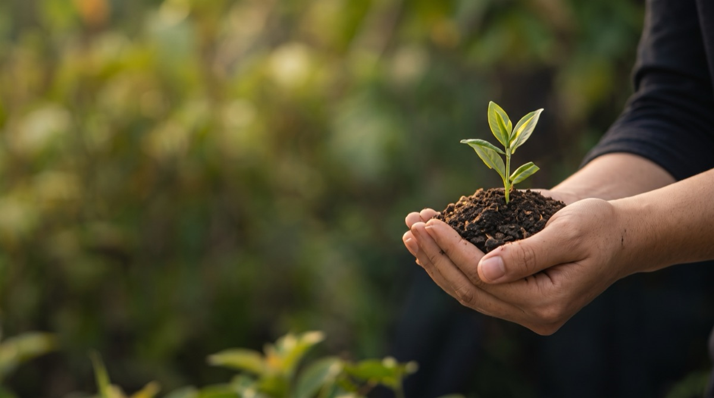
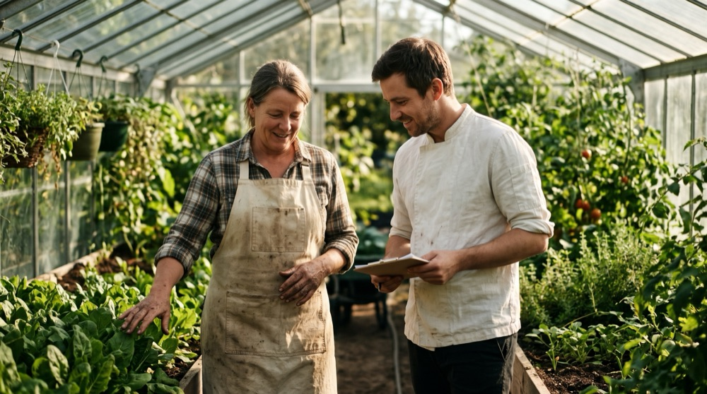

Sobre Nós
Mais do que refeições: um compromisso real com a sua saúde e com o futuro do planeta.
A Nossa História
A BioMarmita nasceu da vontade de responder a um dilema diário vivido por muitas famílias e profissionais do Grande Porto: como manter uma alimentação equilibrada, biológica e apetitosa num quotidiano acelerado, sem passar horas à volta de panelas ou no supermercado?
Decidimos criar uma ponte direta entre as melhores quintas biológicas locais e a mesa dos nossos clientes. Cada refeição é confecionada com respeito pelos ciclos naturais da terra, embalada em materiais ecológicos e entregue com máxima conveniência.

O Que Nos Move Todos os Dias
Pilares sólidos que orientam cada refeição que cozinhamos e cada entrega que realizamos.
Missão
Simplificar a alimentação saudável, libertando tempo a profissionais e famílias, através da entrega semanal de refeições biológicas, equilibradas e prontas a aquecer e consumir, preparadas com ingredientes de produtores locais e acondicionadas em embalagens de bioplástico renovável, biodegradáveis, compostáveis e herméticas (vácuo), com incentivo à recolha facultativa para compostagem circular.
Visão
Ser a marca portuguesa escolhida pelos consumidores de refeições biológicas por subscrição, reconhecida por simplificar a alimentação saudável no dia a dia, valorizar os produtores locais e promover um consumo mais sustentável sem desperdício.
Valores
• Transparência Alimentar: Partilha aberta da lista de ingredientes, valores nutricionais e nomes das quintas parceiras em cada ficha de produto.
• Sustentabilidade Real: Desperdício zero na cadeia logística e incentivo à economia circular com recolha facultativa de embalagens para compostagem.
• Proximidade e Confiança: Atendimento direto e ágil via WhatsApp com tempo de resposta inferior a 1 hora em horário útil.

Da Terra Para a Cozinha
Mantemos uma relação próxima e justa com cada agricultor. Esta colaboração permite-nos colher ingredientes da época no auge do sabor e dos nutrientes, garantindo que o seu almoço ou jantar tem a textura e o aroma da verdadeira comida caseira.
Ao subscrever as nossas marmitas, você não está apenas a cuidar de si: está a fortalecer as pequenas comunidades agrícolas de Portugal.
Ver o Nosso Impacto Ecológico